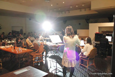
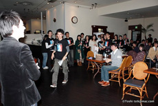

 
最新情報
・ 名札を持っている方は持ってきて頂けると助かります♪
・ 当日軽く手伝ってくれる方を募集中です
教材パッチン、受付などなどです 12時15分ぐらいから会場に
つく予定なので早めにこれそうな方はよろしくお願いします～
・ 現在 65名のご参加となりましたあ！
・ 紙を切るワークがあるのでハサミを持っている方はお持ち下さい
12/23（祝）コミュニケーション運動会＋忘年会
ダイコミュ恒例の大規模イベントが今年もやってきました！
「コミュニケーション運動会＋忘年会（余興あり）」
を開催します！
今年はコミュニケーション運動会を行います。
コミュニケーションに関する運動会です！
そのままですね（笑）
コミュニケーションをテーマに種目を作り、
当日10チームほどつくり「コミュニケーション」に
関する様々な種目でスキルのUPを目指していきます。
例えば1つの種目として
心理学に関するクイズ課題を出して勉強していきます。
クイズ例
- 「うつ病は男性と女性どちらが多いでしょうか？男・女」
- 「人間関係を築く力があるヒトはガンに罹る率が低い。○か×か」
- 「対人恐怖症」は正式な病名ではない。○か×か」
- ネガティブな人ほどうまく課題を達成できるよう研究がある。○か×か」
などなど
通常講義では行わない、
コミュニケーションに関する様々なワークで
スキルをupしましょう。
具体的には以下の種目で楽しくコミュニケーション
しながらスキルを向上させていきましょう！
・ 心理学クイズ
～初対面の印象形成では表情が何％重要？
などクイズに答えながらスキルUP～
・ 伝言ゲーム
～言葉を使って正しく伝える訓練～
・ 非言語を読み取ろう！
～相手の表情を見て、真意を探ろう～
・ チーム対抗ミニプレゼン！
～ある課題を設定し、チーム対抗でプレゼンを行います～
・拡散的思考訓練
～煉瓦課題でたくさんのアイデアを作ろう！～
運動会終了後は今年の振り返り自分自身の振返りと、
来年の自己目標を立てて気持ちよく新年を迎えましょう！
＊仮なので種目は変更になる可能性があります
講座終了後はお楽しみの忘年会！
ダイコミュならではの騒ぎすぎず
しっとりまったりした飲み会にしましょう。
当日の流れ
1 コミュニケーション運動会 13時15分～
まずはアイスブレイク！
簡単なゲームで楽しみましょう。
チームも同時に作っていきます。
様々な種目でコミュニケーションスキルを向上させていきます！
きっとあっという間の3時間半になるでしょう～
当日の流れ
1 コミュニケーション運動会 13時15分～
まずはアイスブレイク！
簡単なゲームで楽しみましょう。
チームも同時に作っていきます。
様々な種目でコミュニケーションスキルを向上させていきます！
きっとあっという間の3時間半になるでしょう～
2 お楽しみの忘年会＋余興 18時45分 受付開始
去年は千代田区の素敵な会場で
バンドあり、かくし芸ありの忘年会を行いました。
今年もたくさんの方が参加されます。
忘年会では運動会
優勝チームの発表も行います。
優勝商品
優勝の方には特別な商品をお渡します♪
お楽しみに！！
参加料金
・コミュニケーション運動会
2,000円
・忘年会（余興）
運動会に参加された方 4,500円
忘年会のみ参加の方 5,000円
＊当日受付にて現金払いとなります
＊忘年会は非営利のイベントにつき
人数によって若干料金が変更になる可能性があります
参加の仕方
過去の生徒さん、現在の講座経験者の方
こちらの掲示板に
講座で使っているあだ名でご応募ください
はじめての方
ダイコミュの雰囲気を知りたい方は
是非いらっしゃってください。
こちらの備考欄にコミュ-1希望と
ご記入ください。
＊注意
忘年会のみのご参加は原則としてできませんが
お仕事等のご都合で出席できない場合は
講師へお伝えください。
詳細